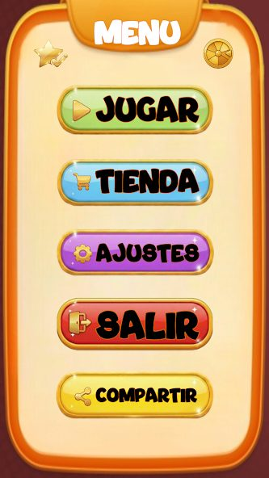
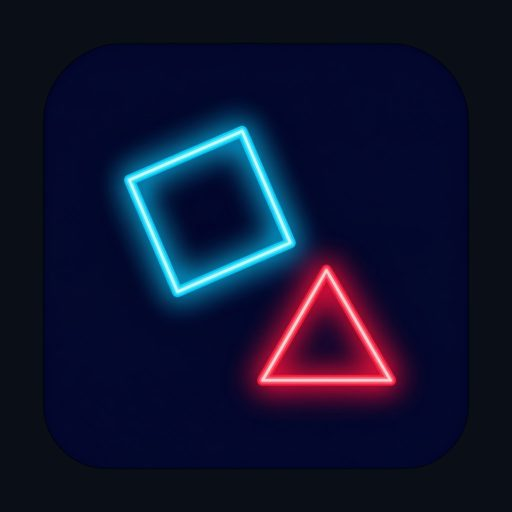

Disponible para incorporación
Desarrollador Full Stack · Estudiante de Máster FP en IA
Soy Alberto Ortiz Sánchez, Técnico Superior en Desarrollo de Aplicaciones Multiplataforma, apasionado por crear soluciones tecnológicas innovadoras. Mi objetivo es aplicar y expandir mis conocimientos en lenguajes informáticos y entornos de programación modernos.
Con una sólida base en Bachillerato de Ciencias y una alta calificación en Selectividad, me destaco por mi facilidad para aprender y mi disponibilidad para adaptarme a nuevos desafíos. Busco oportunidades para contribuir en proyectos innovadores y seguir creciendo profesionalmente.
Actualmente amplío mi formación con el Máster de FP en Aprendizaje Automático: Gestión de Datos y Entrenamiento (IES Zaidín Vergeles), orientado a aplicar inteligencia artificial y análisis de datos a proyectos reales.
INGLÉS
FRANCÉS
Fundación Inspiring Girls Panamá
Desarrollo Full Stack integral (Frontend, Backend y gestor de contenidos CMS fácil de administrar estilo WordPress) para la web oficial de la fundación (50h de voluntariado). Trabajo coordinado para estructurar la plataforma de forma autónoma y funcional. Reconocido con Carta de Recomendación Profesional emitida por la Directora Dra. Iraira Butcher Boza.
Lynx Devs (Granada)
Formación en Centros de Trabajo (FCT). Desarrollo y mantenimiento de módulos y gestión en Odoo; desarrollo de módulos y configuración de PrestaShop; creación y configuración de páginas en PrestaShop; desarrollo de aplicaciones SaaS; software a medida; creación de webs para clientes en WordPress y desarrollo de plugins/módulos para WordPress.
IES José Hurtado
Formación en Centros de Trabajo (FCT). Montaje y configuración de equipos; soporte y resolución de incidencias hardware y periféricos (altavoces, impresoras, etc.); administración y desarrollo de sitios en WordPress.
La Ruta del Azafrán
Trabajo a tiempo parcial mientras realizo mis estudios.
Durante mis estudios secundarios
Programación de robots, desarrollo de páginas/aplicaciones web y experimentación en diversos entornos de programación.
Decomad SL
Experiencia en el entorno de una empresa familiar.
Tras desarrollar la web oficial de la Fundación Inspiring Girls Panamá (50 horas de voluntariado), su Directora Ejecutiva emitió una carta de recomendación profesional destacando el profesionalismo, la calidad técnica y el trabajo colaborativo.
Mis creaciones indie y juegos publicados

¡Entrena tu cerebro 5 minutos al día! Mejora tu memoria y desafía a tus amigos en este juego publicado en la Play Store.
Ver en Play Store →
Un juego de ritmo y velocidad con estética neón. Pon a prueba tus reflejos en este vertiginoso arcade.
Jugar en Itch.io →Recreación clásica del Tetris desarrollada íntegramente en C++, enfocada en la lógica pura y el rendimiento.
Ver en Itch.io →Explora mi perfil en Game Jolt para encontrar más juegos experimentales y prototipos.
Ver Game Jolt →Mi actividad y código en repositorios públicos de GitHub
Herramienta de IA para creación automática de clips virales para TikTok, Shorts y Reels. Transcribe con Faster-Whisper, selecciona ganchos mediante LLMs (Ollama, Groq, OpenAI), genera subtítulos dinámicos ASS y reencuadra a 9:16.
Ver repositorio →Plataforma de inteligencia de fuentes abiertas (OSINT), análisis forense de metadatos y herramientas de criptografía/esteganografía en tiempo real con despliegue en Docker.
Ver repositorio →Cyberpunk arena FPS 3D de ritmo frenético ejecutable en el navegador. Desarrollado con React 19, Three.js, audio procedural, interfaz bilingüe e instalador de escritorio para Windows mediante Tauri.
Ver repositorio →Bot automatizado de custodia criptográfica multi-cadena para Discord. Soporta BTC, LTC, SOL, ETH, USDT y USDC con derivación determinista de wallets, cifrado AES de claves y monitorización en tiempo real en blockchain.
Ver repositorio →Lenguaje de programación estructurado en español: diseño completo de intérprete, análisis léxico/sintáctico, AST, IDE de escritorio nativo, IDE web e instalador ejecutable sin dependencias externas.
Ver repositorio →Solución móvil nativa en Flutter para Android orientada a criadores de aves: gestión exhaustiva de nidadas, trazabilidad genealógica y almacenamiento de datos 100% privado y local.
Ver repositorio →Aplicación nativa moderna en Android con Kotlin y Jetpack Compose. Consume datos reactivos, persiste noticias localmente con base de datos Room y programa sincronizaciones periódicas con WorkManager.
Ver repositorio →Herramienta de auditoría técnica web 100% estática: análisis de métricas Core Web Vitals, diagnóstico SEO on-page en tiempo real y escáner de seguridad y cabeceras HTTP desde el navegador.
Ver repositorio →Aplicación de escritorio en Java con interfaz gráfica Swing y CLI para procesamiento multimedia con FFmpeg. Conversión, recodificación multihilo, escalado y soporte Drag & Drop de archivos.
Ver repositorio →Fork personalizado de Visual Studio Code optimizado para productividad con integración nativa de GitLab, iconografía Material Design y configuraciones optimizadas de desarrollo.
Ver contribución →Aplicación web robusta desarrollada con Spring Boot para la gestión avanzada y estructuración de archivos, implementando sistemas de persistencia no relacionales (RAF y XML) en Java.
Ver contribución →Sistema web administrativo para gestión integral de clientes, cuadros de mando interactivos, generación de métricas y exportación de reportes CSV con ASP.NET Core MVC y SQL Server.
Ver contribución →Bot interactivo de Discord desarrollado en Python (discord.py) enfocado en minijuegos comunitarios: Tres en Raya (JvJ e IA), adivinanzas mediante Modals y dinámicas por turnos.
Ver contribución →IES Zaidín Vergeles
2026 — Actualidad · Granada
IES Padre Suárez
Completado ✓
IES Padre Suárez
Media: 9.10
Nota de acceso: 11.08
50 horas | Fundación Inspiring Girls Panamá | Certificado de Voluntariado & Carta de Recomendación Profesional por Dra. Iraira Butcher Boza (03/09/2026)
IBM-SkillsBuild | Verificación Credly (14/06/2026)
6 horas | BIG school | Certificado de asistencia (02/06/2026)
6 horas | BIG school | Certificado de asistencia (01/05/2026)
Anthropic Academy | Completado: 30/04/2026
6 horas | BIG school | Certificado de asistencia (12/04/2026)
75 horas | Campus Cámara (Andalucía) / SEPE | Calificación: 9.05
70 horas | eusa (Diploma del SEPE) | Calificación: 9.07
Unity Technologies | Verificación Credly (26/09/2025)
Unity Technologies | Verificación Credly (25/09/2025)
6 horas | BIG school | Certificado de asistencia
Google Skillshop | Verificación | Emitido: 23/03/2026 | Válido hasta: 23/03/2027
70 horas | Cisco Networking Academy | Verificación Credly | Completado: 22/03/2026
6 horas | BIG school | Completado: 13/03/2026
40 horas | Google Actívate | Completado: 30/04/2025
70 horas | Cisco Networking Academy | Verificación Credly | Completado: 21/03/2026
40 horas | Google Actívate | Completado: 16/03/2026
Google Skillshop | Verificación | Emitido: 23/03/2026 | Válido hasta: 23/03/2027
40 horas | Google Actívate | Completado: 17/03/2026
Escríbeme